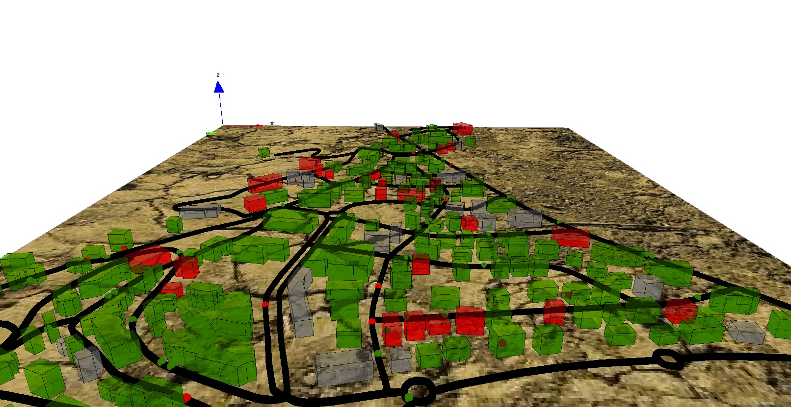

7. Differential Equations
This step illustrates how to use differential equations.
Formulation
We are interested in the spreading of the disease inside the buildings. In order to model it, we will use differential equations. So, we will need to:
- Add two global variables to define the building epidemic properties (
beta) and numerical integration parameter (h). - Add new variables for the buildings (
I,S,T,t,I_to1) to manage epidemic; - Define differential equations for disease spreading inside buildings.
- Add one behavior for buildings for the spreading of the disease.

Model Definition
global variables
We define two new global variables used in the disease spreading dynamic inside the buildings: (i) beta is the contamination rate, and h is the integration step (used in the solve statement).
global {
...
float beta <- 0.01;
float h <- 0.1;
...
}
building
In order to define the disease spread dynamics, we define several variables that will be used by the differential equations:
I: float, number of people infected in the building.S: float, number of people not infected in the building.T: float, the total number of people in the building.t: float, the current time of the equation system integration.I_to1: float, the remaining number of people infected (float number lower between 0 and 1 according to the differential equations).
species building {
...
float I;
float S;
float T;
float t;
float I_to1;
...
}
Then, we define the differential equations system that will be used for the disease spreading dynamic. Note that to define a differential equation system we use the block equation + name. These equations are the classic ones used by SI mathematical models.
species building {
....
equation SI{
diff(S,t) = (- beta * S * I / T) ;
diff(I,t) = ( beta * S * I / T) ;
}
...
}
At last, we define a new reflex for the building called epidemic that will be activated only when there is someone inside the building. This reflex first computes the number of people inside the building (T), then the number of not infected people (S) and finally the number of infected ones (I).
If there is at least one people infected and one people not infected, the differential equations is integrated (according to the integration step value h) with the method Runge-Kutta 4 to compute the new value of infected people. We then sum the old value of I_to1 with the number of people newly infected (this value is a float and not an integer). Finally, we cast this value as an integer, ask the corresponding number of not infected people to become infected, and decrement this integer value to I\_to1.
species building {
...
reflex epidemic when: nb_total > 0 {
T <- float(nb_total);
S <- float(nb_total - nb_infected);
I <- T - S;
float I0 <- I;
if (I > 0 and S > 0) {
solve SI method: #rk4 step_size: h;
I_to1 <- I_to1 + (I - I0);
int I_int <- min([int(S), int(I_to1)]);
I_to1 <- I_to1 - I_int;
ask (I_int among (people_in_building where (!each.is_infected))) {
is_infected <- true;
}
}
}
...
}
Complete Model
/**
* Name: Differential Equation
* Author: GAMA Team
* Description: 7th part of the tutorial : Incremental Model
* Tags: tutorial, chart, graph, 3d, light, multi-Level, equation
*/
model model7
global {
int nb_people <- 500;
float agent_speed <- 5.0 #km / #h;
float step <- 1 #minutes;
float infection_distance <- 2.0 #m;
float proba_infection <- 0.05;
int nb_infected_init <- 5;
file roads_shapefile <- file("../includes/road.shp");
file buildings_shapefile <- file("../includes/building.shp");
geometry shape <- envelope(roads_shapefile);
graph road_network;
float staying_coeff update: 10.0 ^ (1 + min([abs(current_date.hour - 9), abs(current_date.hour - 12), abs(current_date.hour - 18)]));
float beta <- 0.01;
float h <- 0.1;
list<people_in_building> list_people_in_buildings update: (building accumulate each.people_in_building);
int nb_people_infected <- nb_infected_init update: (people + list_people_in_buildings) count (each.is_infected);
int nb_people_not_infected <- nb_people - nb_infected_init update: nb_people - nb_people_infected;
bool is_night <- true update: current_date.hour < 7 or current_date.hour > 20;
float infected_rate update: nb_people_infected / nb_people;
init {
create road from: roads_shapefile;
road_network <- as_edge_graph(road);
create building from: buildings_shapefile;
create people number: nb_people {
speed <- agent_speed;
building bd <- one_of(building);
location <- any_location_in(bd);
}
ask nb_infected_init among people {
is_infected <- true;
}
}
reflex end_simulation when: infected_rate = 1.0 {
do pause;
}
}
species people skills: [moving] {
bool is_infected <- false;
point target;
int staying_counter;
reflex move when: target != nil {
do goto target: target on: road_network;
if (location = target) {
target <- any_location_in(one_of(building));
target <- nil;
staying_counter <- 0;
}
}
reflex infect when: is_infected {
ask people at_distance infection_distance {
if flip(proba_infection) {
is_infected <- true;
}
}
}
aspect circle {
draw circle(5) color: is_infected ? #red : #green;
}
aspect sphere3D {
draw sphere(3) at: {location.x, location.y, location.z + 3} color: is_infected ? #red : #green;
}
}
species road {
geometry display_shape <- shape + 2.0;
aspect default {
draw display_shape color: #black depth: 3.0;
}
}
species building {
int nb_infected <- 0 update: self.people_in_building count each.is_infected;
int nb_total <- 0 update: length(self.people_in_building);
float height <- rnd(10 #m, 20 #m);
float I;
float S;
float T;
float t;
float I_to1;
species people_in_building parent: people schedules: [] { }
reflex let_people_leave {
ask self.people_in_building {
staying_counter <- staying_counter + 1;
}
release people_in_building where (flip((each).staying_counter / staying_coeff)) as: people in: world {
target <- any_location_in(one_of(building));
}
}
reflex let_people_enter {
capture (people inside self) where (each.target = nil) as: people_in_building;
}
equation SI {
diff(S, t) = (-beta * S * I / T);
diff(I, t) = (beta * S * I / T);
}
reflex epidemic when: nb_total > 0 {
T <- float(nb_total);
S <- float(nb_total - nb_infected);
I <- T - S;
float I0 <- I;
if (I > 0 and S > 0) {
solve SI method: #rk4 step_size: h;
I_to1 <- I_to1 + (I - I0);
int I_int <- min([int(S), int(I_to1)]);
I_to1 <- I_to1 - I_int;
ask (I_int among (people_in_building where (!each.is_infected))) {
is_infected <- true;
}
}
}
aspect default {
draw shape color: nb_total = 0 ? #gray : (float(nb_infected) / nb_total > 0.5 ? #red : #green) border: #black depth: height;
}
}
experiment main_experiment type: gui {
parameter "Infection distance" var: infection_distance;
parameter "Proba infection" var: proba_infection min: 0.0 max: 1.0;
parameter "Nb people infected at init" var: nb_infected_init;
output {
monitor "Current hour" value: current_date.hour;
monitor "Infected people rate" value: infected_rate;
display map_3D type: opengl {
light 1 color: (is_night ? 50 : 255);
image "../includes/soil.jpg";
species road;
species people aspect: sphere3D;
species building transparency: 0.5;
}
display chart refresh: every(10 #cycles) {
chart "Disease spreading" type: series {
data "susceptible" value: nb_people_not_infected color: #green marker: false;
data "infected" value: nb_people_infected color: #red marker: false;
}
}
}
}